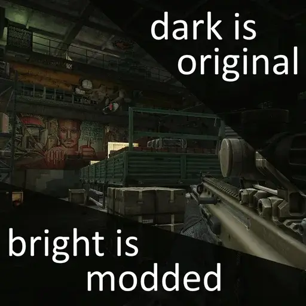
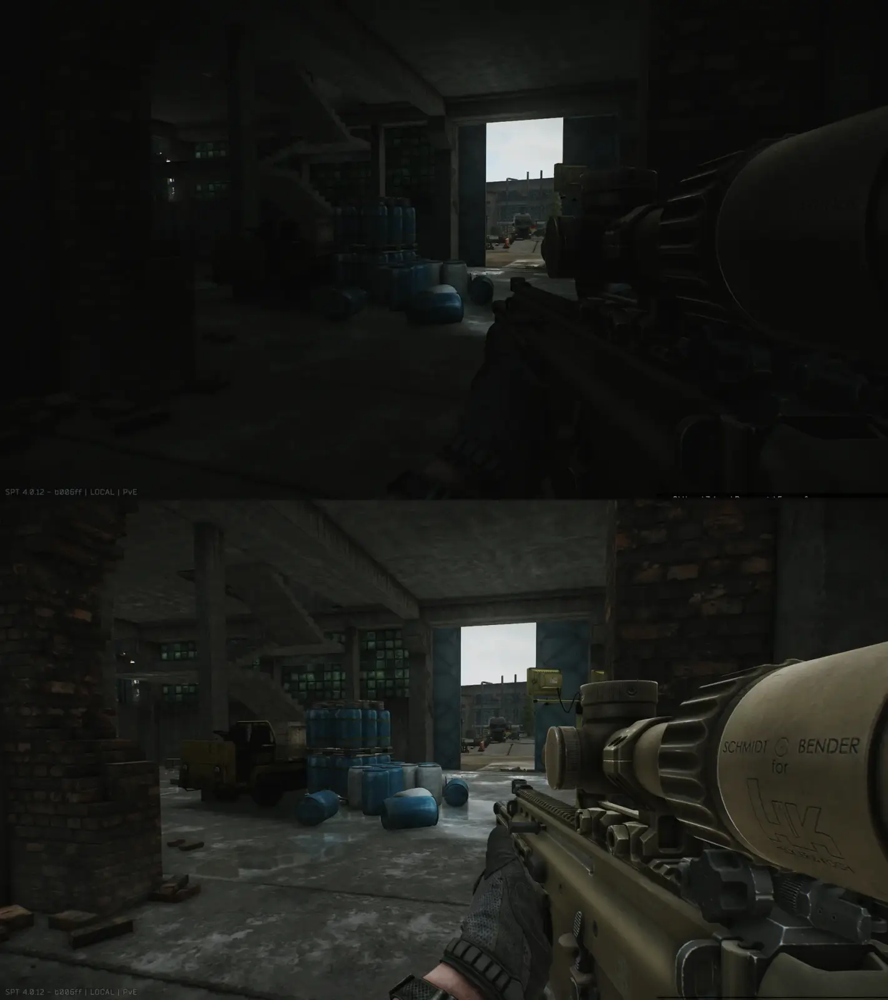
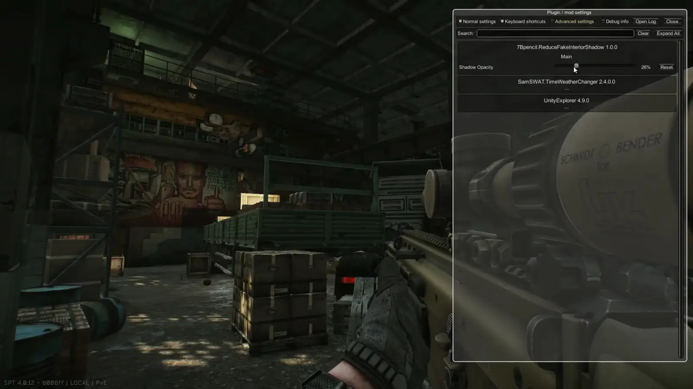
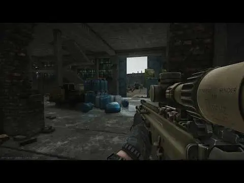
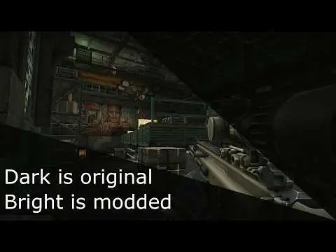

Mod
Featured
Brighter Interiors
- Downloads
- 41,642
- Favourites
- 145
- Mod lists
- 255
About
BSG put fake “shadow cubes” inside every interior to compensate for non-existing GI.
This mod gives you ability to tweak opacity of those interior shadows.
In game press F12 and select mod to tweak settings.


Videos

